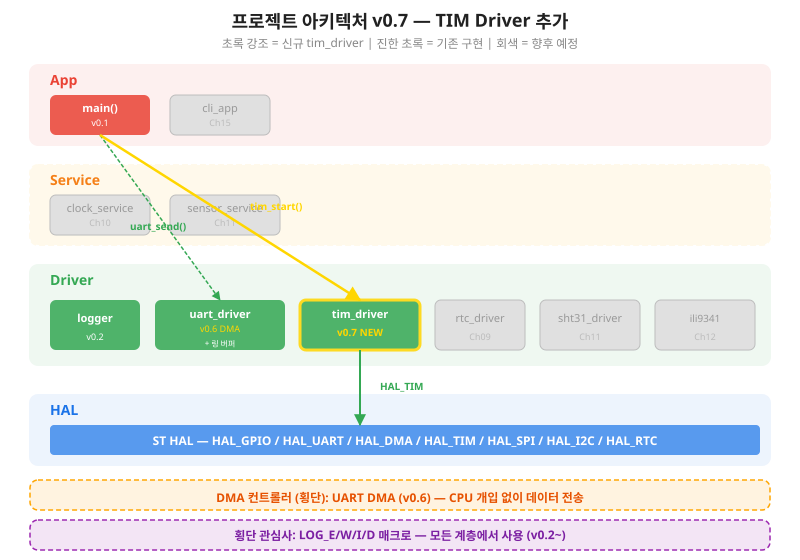
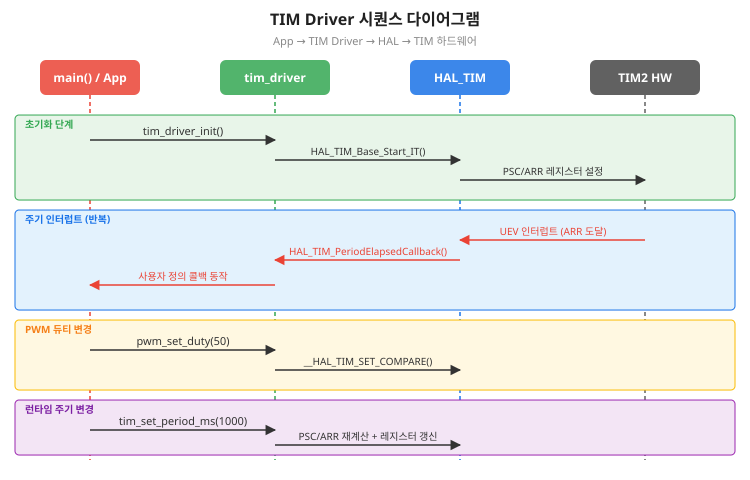
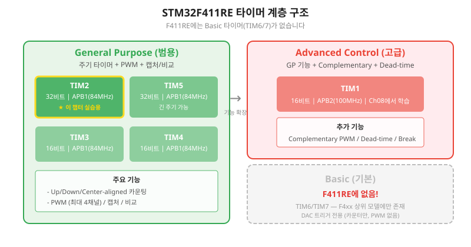
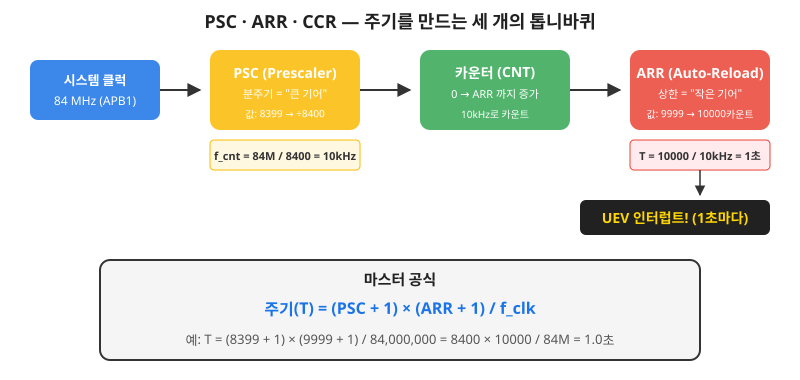
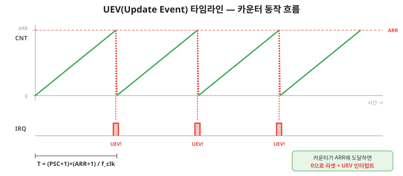
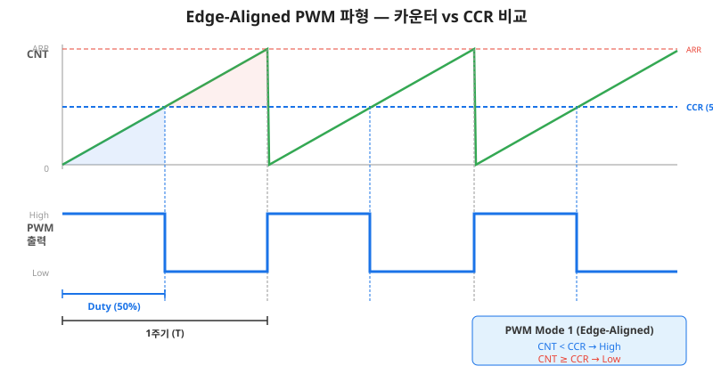
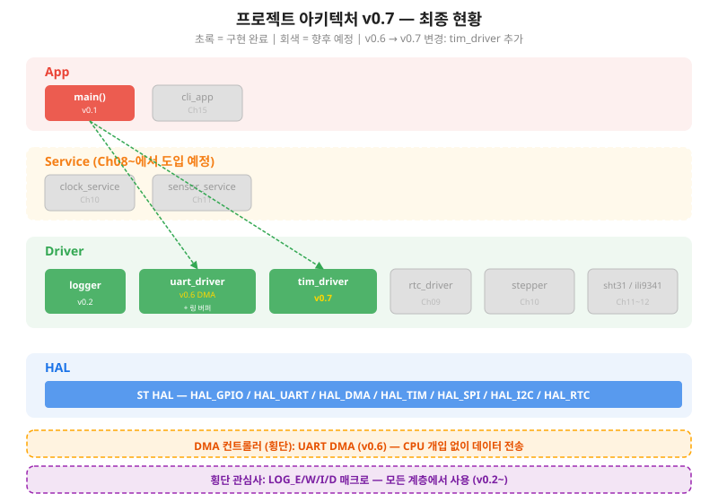

시간을 정밀하게 다스리다 — 타이머 인터럽트로 정확한 주기를 만들고, PWM으로 밝기와 속도를 제어한다
여기까지 온 여러분의 성과를 확인합시다. Ch01에서 GPIO/EXTI, Ch02에서 로그, Ch03에서 4계층 아키텍처, Ch04~Ch06에서 UART와 DMA 링 버퍼까지 완성했습니다. 6개 챕터, Part 0~1 완주. 이제 Part 2의 첫 문을 엽니다.
지금까지 여러분의 코드에서 "시간"을 다루는 방법은 하나뿐이었습니다.
HAL_Delay(500) — 500밀리초 동안 CPU를 멈추고 기다리는 것.
Ch01에서 LED를 깜빡일 때 이 함수를 사용했죠.
당시에는 충분했지만, 다시 생각해 봅시다.
HAL_Delay()는 내부적으로 SysTick 카운터를 폴링합니다.
500ms 동안 CPU는 while 루프 안에서 카운터 값을 확인하며 아무것도 하지 않습니다.
UART 수신도 못 하고, 센서 데이터도 못 읽고, 화면 갱신도 못 합니다.
Ch04~06에서 어렵게 DMA로 CPU를 해방했는데, HAL_Delay() 한 줄이면 다시 감옥입니다.
이 챕터에서 우리는 타이머(Timer)를 배웁니다. 타이머는 CPU와 독립적으로 동작하는 하드웨어 카운터입니다. "500ms 뒤에 알려줘"라고 설정하면, CPU는 다른 일을 하다가 정확히 500ms 후에 인터럽트를 받습니다. 게다가 PWM(Pulse Width Modulation, 펄스 폭 변조)이라는 기법으로 LED의 밝기, 모터의 속도, 부저의 음높이까지 제어할 수 있습니다.
이 챕터가 끝나면:
HAL_Delay()를 쓰지 않고 정확한 500ms 주기로 LED를 토글합니다.tim_driver.h/c를 완성합니다.Ch07은 Driver 레이어에 tim_driver를 새로 추가합니다.
Ch04에서 uart_driver를 만들었던 것과 동일한 패턴입니다.

tim_driver가 상위 레이어에 노출하는 API입니다. uart_driver.h와 동일한 설계 원칙을 따릅니다.
/* tim_driver.h — 공개 인터페이스 */
typedef enum {
TIM_OK = 0, TIM_ERROR = 1, TIM_BUSY = 2, TIM_PARAM = 3
} tim_status_t;
void tim_driver_init(void);
tim_status_t tim_start(void);
tim_status_t tim_stop(void);
tim_status_t tim_set_period_ms(uint32_t period_ms);
tim_status_t pwm_start(void);
tim_status_t pwm_stop(void);
tim_status_t pwm_set_duty(uint8_t percent);
void tim_register_callback(tim_callback_t cb);

이 챕터를 완료하면 다음을 할 수 있습니다.
피아노를 배울 때 메트로놈이라는 도구를 씁니다. "딱, 딱, 딱" — 일정한 간격으로 소리를 내서 박자를 맞춰주는 장치입니다. 메트로놈의 속도를 빠르게 하면 간격이 짧아지고, 느리게 하면 간격이 길어집니다. STM32의 타이머(Timer)가 바로 이 메트로놈입니다.
타이머의 정체는 간단합니다. 클럭 신호에 맞춰 1씩 증가하는 카운터입니다. 0부터 시작해서 설정한 상한값(ARR)에 도달하면, 0으로 돌아가고 "도달했다!"는 이벤트(UEV)를 발생시킵니다. 이 동작이 하드웨어로 구현되어 있으므로, CPU가 개입할 필요가 없습니다.
이것이 HAL_Delay()와의 결정적 차이입니다.
HAL_Delay()는 CPU가 직접 카운터를 확인하며 기다리지만,
타이머는 하드웨어가 알아서 세고, 끝나면 인터럽트로 알려줍니다.
STM32 타이머는 기능에 따라 세 가지 등급으로 나뉩니다.

| 등급 | 타이머 | 비트 | 클럭 | 주요 기능 |
|---|---|---|---|---|
| General Purpose (범용) | TIM2, TIM5 | 32비트 | APB1 (84MHz) | 카운팅, PWM 4채널, 캡처/비교 |
| General Purpose (범용) | TIM3, TIM4 | 16비트 | APB1 (84MHz) | 동일 (최대 카운트 65535) |
| Advanced Control (고급) | TIM1 | 16비트 | APB2 (84MHz) | GP 기능 + Complementary PWM + Dead-time |
| Basic (기본) | 없음! | - | - | F411에는 TIM6/TIM7 없음 |
이 챕터에서는 TIM2를 사용합니다. 선택 이유:
타이머가 카운트하려면 클럭 신호가 필요합니다. TIM2~TIM5는 APB1 버스에 연결되어 있습니다. NUCLEO-F411RE의 기본 설정에서 APB1 타이머 클럭은 84MHz입니다.
84MHz — 1초에 8천4백만 번 카운트. 이대로 사용하면 너무 빠릅니다. 카운터가 ARR에 도달하는 시간이 마이크로초 단위가 되어버립니다. 그래서 PSC(Prescaler, 분주기)가 필요합니다 — 다음 절에서 상세히 다룹니다.
84MHz 클럭을 그대로 쓰면 카운터가 너무 빨리 돕니다. 우리가 원하는 것은 "500ms마다 한 번" 같은 인간 시간 단위의 이벤트입니다. 이것을 만드는 핵심 레지스터가 세 개 있습니다: PSC(Prescaler, 분주기), ARR(Auto-Reload Register, 자동 재적재), 그리고 CCR(Capture/Compare Register, 캡처 비교).
84MHz 클럭이 타이머에 들어오면, PSC가 먼저 속도를 줄입니다. 분주 공식:
/* 카운터 클럭 주파수 */
f_cnt = f_clk / (PSC + 1)
왜 PSC + 1일까요?
PSC = 0이면 분주하지 않습니다(÷1), PSC = 1이면 2분주(÷2)입니다.
레지스터 값이 0부터 시작하므로 "+1"이 붙습니다.
예를 들어 PSC = 8399이면:
f_cnt = 84,000,000 / (8399 + 1) = 84,000,000 / 8400 = 10,000 Hz = 10kHz
84MHz가 10kHz로 줄었습니다. 이제 카운터는 1초에 10,000번 증가합니다 — 0.1ms(100us)마다 1씩.
카운터는 0부터 시작해서 1씩 증가합니다. ARR 값에 도달하면 0으로 리셋되고, UEV(Update Event)가 발생합니다. 이 UEV가 바로 "한 주기 완료"를 알리는 신호입니다.
/* 주기 (초) */
T = (ARR + 1) / f_cnt
/* 위의 두 공식을 합치면 — 마스터 공식 */
T = (PSC + 1) × (ARR + 1) / f_clk

같은 주기도 여러 PSC/ARR 조합으로 만들 수 있습니다. 아래 표를 직접 계산해 보세요.
| 목표 주기 | PSC | ARR | f_cnt | 계산 |
|---|---|---|---|---|
| 1초 | 8399 | 9999 | 10kHz | 8400 × 10000 / 84M = 1.0s |
| 500ms | 8399 | 4999 | 10kHz | 8400 × 5000 / 84M = 0.5s |
| 100ms | 8399 | 999 | 10kHz | 8400 × 1000 / 84M = 0.1s |
| 10ms | 83 | 9999 | 1MHz | 84 × 10000 / 84M = 0.01s |
| 1ms | 83 | 999 | 1MHz | 84 × 1000 / 84M = 0.001s |
/* ch07_01_tim_period_calc.c — PSC/ARR 조합 검증 코드 (발췌) */
static const tim_calc_entry_t calc_table[] = {
{ 8399, 9999, "1초 (1 Hz)" },
{ 8399, 4999, "500ms (2 Hz)" },
{ 8399, 999, "100ms (10 Hz)" },
{ 83, 9999, "10ms (100 Hz)" },
{ 83, 999, "1ms (1 kHz)" },
};
void tim_period_calc_demo(void)
{
const uint32_t f_clk = 84000000; /* 84 MHz */
for (uint32_t i = 0; i < count; i++) {
uint64_t period_us = (uint64_t)(psc + 1) * (arr + 1)
* 1000000 / f_clk;
LOG_I("[%lu] PSC=%5lu, ARR=%5lu → T=%lu us (%s)",
i, psc, arr, (uint32_t)period_us,
calc_table[i].desc);
}
}
CCR은 §7.4에서 본격적으로 다루지만, 여기서 맛보기를 합시다. CCR은 카운터가 특정 값에 도달했을 때 출력 핀의 상태를 바꾸는 기준점입니다. 카운터가 0에서 ARR까지 올라가는 동안:
이것이 PWM(Pulse Width Modulation)의 기본 원리입니다. CCR 값을 바꾸면 High 구간의 비율(=Duty Cycle)이 바뀝니다.
공식을 알았으니 실전입니다. §7.1에서 "HAL_Delay()는 감옥"이라고 했죠. 이제 타이머 인터럽트로 CPU를 해방하면서 정확한 500ms 주기로 LED를 토글합니다.
카운터가 ARR에 도달하면 발생하는 이벤트를 UEV(Update Event)라고 합니다. 메트로놈의 "딱!" 소리와 같습니다. NVIC에서 TIM2 인터럽트를 활성화하면, 이 UEV가 ISR(인터럽트 서비스 루틴)을 호출합니다.

CubeMX에서 TIM2를 설정하는 단계입니다.
83994999/* ch07_02_tim_interrupt_led.c — TIM2 500ms 인터럽트 LED 토글 */
#include "main.h"
#include "log.h"
extern TIM_HandleTypeDef htim2;
/* TIM2 인터럽트 시작 */
void tim_interrupt_led_start(void)
{
/* TIM2 인터럽트 모드 시작 */
HAL_TIM_Base_Start_IT(&htim2);
LOG_I("TIM2 인터럽트 LED 토글 시작 (500ms 주기)");
}
/* UEV 콜백 — HAL이 자동 호출 */
void HAL_TIM_PeriodElapsedCallback(TIM_HandleTypeDef *htim)
{
if (htim->Instance != TIM2) {
return; /* 다른 타이머는 무시 */
}
/* LED 토글 (PA5 = NUCLEO LD2) */
HAL_GPIO_TogglePin(GPIOA, GPIO_PIN_5);
LOG_D("TIM2 UEV: LED 토글");
}
main()에서 호출 방법:
/* main.c — USER CODE BEGIN 2 영역 */
tim_interrupt_led_start();
/* 이후 while(1) 루프에서 CPU는 자유!
* UART 수신, 센서 읽기 등 다른 작업 가능 */
while (1)
{
/* 타이머가 500ms마다 알아서 LED를 토글함 */
/* CPU는 여기서 다른 일을 할 수 있음 */
}
| 항목 | HAL_Delay(500) | TIM2 인터럽트 |
|---|---|---|
| CPU 점유율 | 100% (대기 중) | ~0% (콜백만) |
| 정밀도 | ±1ms (SysTick 의존) | 하드웨어 정밀 (클럭 정확도) |
| 다른 작업 | 불가능 | 자유롭게 가능 |
| 주기 변경 | 코드 수정 필요 | 런타임에 ARR 변경 가능 |
타이머로 주기적 인터럽트를 만드는 것은 배웠습니다. 이제 타이머의 또 다른 강력한 기능, PWM(Pulse Width Modulation, 펄스 폭 변조)을 배웁니다. PWM을 사용하면 디지털 출력으로 아날로그적인 제어가 가능합니다 — LED의 밝기, 모터의 속도, 부저의 음높이를 숫자 하나로 바꿀 수 있습니다.
STM32의 기본 PWM 모드는 Edge-Aligned (엣지 정렬)입니다. 카운터가 0부터 ARR까지 올라가는 동안, CCR과 비교하여 출력을 결정합니다.

/* Duty 계산 공식 */
Duty(%) = CCR / (ARR + 1) × 100
/* 역산: 원하는 Duty에서 CCR 구하기 */
CCR = (ARR + 1) × Duty(%) / 100
예를 들어 ARR = 999 (주기 1000 카운트)이면:
| Duty | CCR 값 | High 시간 |
|---|---|---|
| 25% | 250 | 250/10000 = 25us (1kHz 기준) |
| 50% | 500 | 500/10000 = 50us |
| 75% | 750 | 750/10000 = 75us |
| 100% | 1000 | 전체 주기 High |
83 (카운터 1MHz)999 (PWM 주파수 1kHz)500 (50% 듀티)/* ch07_03_pwm_led_brightness.c — PWM 4단계 밝기 제어 (발췌) */
extern TIM_HandleTypeDef htim2;
void pwm_led_brightness_start(void)
{
HAL_TIM_PWM_Start(&htim2, TIM_CHANNEL_1);
LOG_I("PWM LED 밝기 제어 시작 (PA0, 1kHz)");
}
void pwm_led_set_duty(uint8_t percent)
{
if (percent > 100) {
LOG_W("듀티 범위 초과: %d%% → 100%%로 제한", percent);
percent = 100;
}
uint32_t arr = __HAL_TIM_GET_AUTORELOAD(&htim2);
uint32_t ccr = (arr + 1) * percent / 100;
__HAL_TIM_SET_COMPARE(&htim2, TIM_CHANNEL_1, ccr);
LOG_D("PWM 듀티 변경: %d%% (CCR=%lu)", percent, ccr);
}
void pwm_led_brightness_demo(void)
{
const uint8_t levels[] = { 25, 50, 75, 100 };
pwm_led_brightness_start();
for (uint32_t i = 0; i < 4; i++) {
pwm_led_set_duty(levels[i]);
LOG_I("밝기 단계 %lu: %d%%", i + 1, levels[i]);
HAL_Delay(2000); /* 2초 유지 */
}
}
TIM2~TIM5의 PWM 출력이 가능한 핀을 정리합니다. CubeMX에서 해당 핀에 대체 기능(Alternate Function)을 설정해야 합니다.
| 타이머 | CH1 | CH2 | CH3 | CH4 |
|---|---|---|---|---|
| TIM2 | PA0(A0), PA5(LD2) | PA1(A1), PB3 | PA2(D1/TX), PB10 | PA3(D0/RX), PB11 |
| TIM3 | PA6(D12), PB4(D5), PC6 | PA7(D11), PB5(D4), PC7 | PB0(A3), PC8 | PB1, PC9 |
| TIM4 | PB6(D10) | PB7 | PB8(D15) | PB9(D14) |
| TIM5 | PA0(A0) | PA1(A1) | PA2(D1/TX) | PA3(D0/RX) |
§7.3과 §7.4에서 타이머 인터럽트와 PWM을 직접 HAL API로 다뤘습니다. 이제 이 코드를 tim_driver.h/c로 캡슐화합니다. Ch04에서 만든 uart_driver와 정확히 같은 설계 패턴을 따릅니다.
왜 캡슐화해야 할까요?
§7.3~7.4 코드에서는 htim2, HAL_TIM_Base_Start_IT(),
__HAL_TIM_SET_COMPARE() 같은 HAL 상세가 그대로 노출되어 있습니다.
만약 TIM2 대신 TIM3을 사용하고 싶다면?
또는 향후 Ch08에서 Advanced TIM1으로 확장한다면?
HAL 함수를 직접 호출하는 코드가 App 전체에 흩어져 있으면, 모두 수정해야 합니다.
uart_driver가 보여준 해결책을 그대로 적용합니다: App은 tim_driver.h만 include하고, HAL 헤더는 tim_driver.c 안에서만 참조.
/* ch07_04_tim_driver.h — TIM Driver 공개 인터페이스 */
#ifndef TIM_DRIVER_H
#define TIM_DRIVER_H
#include <stdint.h>
/* 반환 코드 (uart_driver.h와 동일 패턴) */
typedef enum {
TIM_OK = 0, /* 성공 */
TIM_ERROR = 1, /* 일반 오류 */
TIM_BUSY = 2, /* 동작 중 */
TIM_PARAM = 3 /* 파라미터 오류 */
} tim_status_t;
/* 초기화 */
void tim_driver_init(void);
/* 주기 타이머 */
tim_status_t tim_start(void);
tim_status_t tim_stop(void);
tim_status_t tim_set_period_ms(uint32_t period_ms);
/* PWM */
tim_status_t pwm_start(void);
tim_status_t pwm_stop(void);
tim_status_t pwm_set_duty(uint8_t percent);
/* 콜백 등록 */
typedef void (*tim_callback_t)(void);
void tim_register_callback(tim_callback_t cb);
#endif /* TIM_DRIVER_H */
| 패턴 | uart_driver | tim_driver |
|---|---|---|
| 반환 코드 | uart_status_t | tim_status_t |
| 초기화 | uart_driver_init() | tim_driver_init() |
| 시작/정지 | (암묵적, init 시 시작) | tim_start() / tim_stop() |
| 주요 동작 | uart_send() | tim_set_period_ms() |
| HAL 숨기기 | .c에서만 HAL include | 동일 |
| 콜백 | HAL 콜백 내부 처리 | 사용자 등록 콜백 |
/* ch07_04_tim_driver.c — TIM Driver 구현 (발췌) */
#include "tim_driver.h"
#include "main.h" /* HAL, GPIO 정의 */
#include "log.h" /* LOG_D/I/W/E */
extern TIM_HandleTypeDef htim2;
static volatile tim_callback_t s_uev_callback = NULL;
#define TIM2_CLK_HZ 84000000U
void tim_driver_init(void)
{
s_uev_callback = NULL;
LOG_I("tim_driver 초기화 완료 (TIM2, APB1=%luHz)",
TIM2_CLK_HZ);
}
tim_status_t tim_start(void)
{
HAL_StatusTypeDef hal_st;
hal_st = HAL_TIM_Base_Start_IT(&htim2);
if (hal_st != HAL_OK) {
LOG_E("tim_start 실패: hal=%d", hal_st);
return TIM_ERROR;
}
LOG_I("TIM2 인터럽트 시작");
return TIM_OK;
}
tim_status_t tim_set_period_ms(uint32_t period_ms)
{
if (period_ms == 0 || period_ms > 60000) {
LOG_W("범위 초과: %lu ms", period_ms);
return TIM_PARAM;
}
uint32_t psc, arr;
/* 10kHz 카운터 (PSC=8399, 16비트 범위 안전) */
psc = (TIM2_CLK_HZ / 10000) - 1; /* 8399 */
arr = period_ms * 10 - 1;
__HAL_TIM_SET_PRESCALER(&htim2, psc);
__HAL_TIM_SET_AUTORELOAD(&htim2, arr);
__HAL_TIM_GENERATE_SOFTWARE_UPDATE_EVENT(&htim2);
__HAL_TIM_CLEAR_FLAG(&htim2, TIM_FLAG_UPDATE);
LOG_D("주기 변경: %lu ms (PSC=%lu, ARR=%lu)",
period_ms, psc, arr);
return TIM_OK;
}
tim_status_t pwm_set_duty(uint8_t percent)
{
if (percent > 100) {
LOG_W("듀티 범위 초과: %d%%", percent);
return TIM_PARAM;
}
uint32_t arr = __HAL_TIM_GET_AUTORELOAD(&htim2);
uint32_t ccr = (arr + 1) * percent / 100;
__HAL_TIM_SET_COMPARE(&htim2, TIM_CHANNEL_1, ccr);
LOG_D("PWM 듀티: %d%% (CCR=%lu)", percent, ccr);
return TIM_OK;
}
/* UEV 콜백 → 사용자 등록 함수 호출 */
void HAL_TIM_PeriodElapsedCallback(TIM_HandleTypeDef *htim)
{
if (htim->Instance != TIM2) return;
if (s_uev_callback != NULL) s_uev_callback();
}
/* main.c — tim_driver를 사용하는 App 코드 */
#include "tim_driver.h"
/* LED 토글 콜백 */
static void on_timer_tick(void)
{
HAL_GPIO_TogglePin(GPIOA, GPIO_PIN_5);
}
int main(void)
{
/* ... HAL_Init, SystemClock, MX 초기화 ... */
tim_driver_init();
tim_register_callback(on_timer_tick);
tim_set_period_ms(500);
tim_start();
pwm_set_duty(50);
pwm_start();
while (1) {
/* CPU 자유! UART, 센서 등 다른 작업 */
}
}
개별 기능을 모두 배웠으니, 이제 이전 챕터와 통합합니다. 이것이 누적 성장형 프로젝트의 핵심입니다 — 새 기능을 기존 코드에 자연스럽게 합칩니다.
Ch01의 버튼 EXTI + Ch07의 tim_driver를 결합합니다. 버튼을 누를 때마다 LED 깜빡임 속도와 PWM 밝기를 순환시킵니다.
/* main.c — 누적 통합 예제 (Ch01 EXTI + Ch07 TIM) */
#include "tim_driver.h"
#include "uart_driver.h"
#include "log.h"
/* 상태 */
static uint8_t s_mode = 0;
/* 모드별 설정 */
typedef struct {
uint32_t period_ms;
uint8_t duty;
const char *desc;
} mode_entry_t;
static const mode_entry_t modes[] = {
{ 1000, 25, "느린 깜빡 + 25% 밝기" },
{ 500, 50, "보통 깜빡 + 50% 밝기" },
{ 200, 75, "빠른 깜빡 + 75% 밝기" },
{ 100, 100, "매우 빠른 + 100% 밝기" },
};
#define MODE_COUNT (sizeof(modes) / sizeof(modes[0]))
/* LED 토글 콜백 */
static void on_timer_tick(void)
{
HAL_GPIO_TogglePin(GPIOA, GPIO_PIN_5);
}
/* 버튼 EXTI 콜백 (Ch01) */
void HAL_GPIO_EXTI_Callback(uint16_t GPIO_Pin)
{
if (GPIO_Pin != GPIO_PIN_13) return; /* PC13 = USER BTN */
s_mode = (s_mode + 1) % MODE_COUNT;
tim_set_period_ms(modes[s_mode].period_ms);
pwm_set_duty(modes[s_mode].duty);
LOG_I("모드 변경 → [%d] %s", s_mode, modes[s_mode].desc);
}
int main(void)
{
/* ... HAL_Init, SystemClock, MX 초기화 ... */
uart_driver_init(); /* Ch04/06 */
tim_driver_init(); /* Ch07 */
tim_register_callback(on_timer_tick);
tim_set_period_ms(modes[0].period_ms);
tim_start();
pwm_set_duty(modes[0].duty);
pwm_start();
LOG_I("=== 통합 데모 시작 (버튼으로 모드 전환) ===");
while (1) {
/* CPU 자유 — UART 수신 처리 등 */
if (uart_available()) {
uint8_t ch = uart_read_byte();
LOG_D("UART 수신: 0x%02X", ch);
}
}
}
이 챕터 완료 후 전체 아키텍처에 tim_driver가 추가되었습니다.
v0.6에서 v0.7로의 변경은 Driver 레이어에 컴포넌트 1개 추가뿐입니다.
기존 uart_driver, logger는 전혀 변경 없이 유지됩니다.

| 항목 | v0.6 | v0.7 |
|---|---|---|
| Driver 컴포넌트 | logger, uart_driver | logger, uart_driver, tim_driver |
| 신규 파일 | - | tim_driver.h, tim_driver.c |
| 기존 파일 변경 | - | main.c (init 호출 추가) |
| HAL 사용 | GPIO, UART, DMA | GPIO, UART, DMA, TIM |
HAL_TIM_PeriodElapsedCallback()으로 처리.HAL_TIM_PWM_Start() + __HAL_TIM_SET_COMPARE()로 제어.HAL_Delay()와 TIM 인터럽트가 혼재되어 있습니다. 어떤 문제가 발생할 수 있는지 분석하고, 개선 방안을 제시하시오.
void HAL_TIM_PeriodElapsedCallback(TIM_HandleTypeDef *htim)
{
HAL_UART_Transmit(&huart2, "tick\n", 5, 100);
HAL_Delay(10);
}